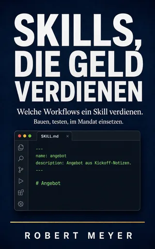
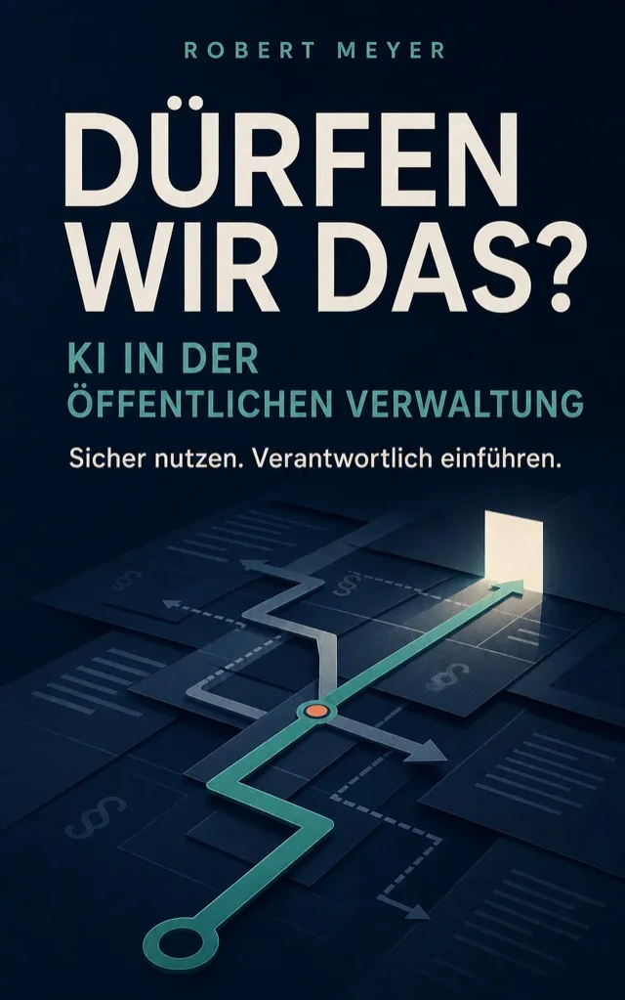
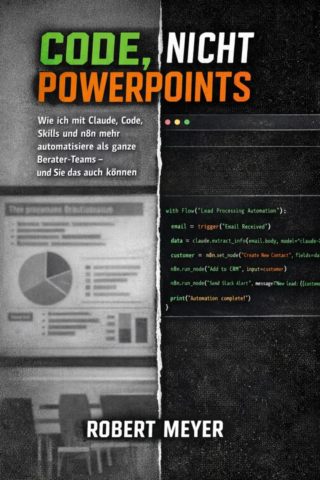
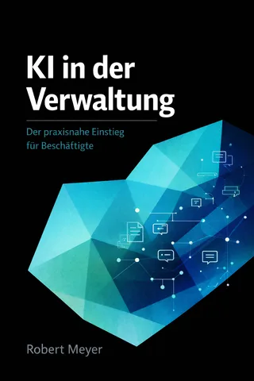

September 2026
Skills, die Geld verdienen
Welche Workflows einen KI-Skill verdienen. Bauen, testen, im Mandat einsetzen.
Robert Meyer · KI-Fachbücher
Ich bin KI-Berater, Dozent und Fachautor. Seit über 15 Jahren begleite ich Digitalisierung und KI-Einführung im Mittelstand und in der Verwaltung. Meine Bücher beginnen bei den Fragen, die dort tatsächlich gestellt werden.
Neuerscheinungen

Welche Workflows einen KI-Skill verdienen. Bauen, testen, im Mandat einsetzen.

KI in der öffentlichen Verwaltung sicher nutzen und verantwortlich einführen.
Routine abgeben, ohne die Kontrolle abzugeben. Mit 30-Tage-Plan.
Inhalt
Aus Seminaren, Beratungen und Gesprächen mit Geschäftsführungen, IT-Leitungen und Behörden. Zu jeder Frage gibt es ein Buch, mit dem ich anfangen würde, und zwei, die tiefer gehen.
Kapitel I: Regeln und Verantwortung
Diese Frage kommt selten aus der IT. Sie kommt aus Rechtsabteilungen, Personalräten und Amtsleitungen. Und sie ist berechtigt: Der EU AI Act gilt, die DSGVO gilt, und kaum jemand hat Zeit, beides nebeneinanderzulegen.

Hier würde ich anfangen · Neu, August 2026
KI in der öffentlichen Verwaltung sicher nutzen und verantwortlich einführen
Das Buch ersetzt keine Rechtsberatung. Es sorgt dafür, dass Sie die richtigen Fragen stellen, bevor jemand anderes sie stellt.
Wer tiefer gehen will
Ganze Reihe Regulierung + Kontrolle bei Amazon (neuer Tab)
Der Compliance-Leitfaden für kleine und mittlere Unternehmen: Pflichten erkennen, Risiken einstufen, Nachweise aufbauen.

Die unbequeme Wahrheit über KI im Business: gescheiterte Projekte, ihre Mechanismen und was stattdessen funktioniert.
Kapitel II: Systeme und Grenzen
Zwischen der Demo im Konferenzraum und dem Betrieb im Alltag liegen oft Monate. Hier geht es um das, was nach dem Pilotprojekt kommt: Kosten, Ausfälle, Grenzen. Und um die Frage, ob es immer das größte Modell sein muss.

Hier würde ich anfangen
Vom Prototyp zum Produktivsystem. Wie Unternehmen autonome KI-Agenten skalieren
„Der Agent, der zehn Testfälle perfekt bewältigt hat, scheitert bei Fall Nummer elf.“
Wer tiefer gehen will
Ganze Reihe KI-Werkzeugkasten bei Amazon (neuer Tab)
Small Language Models im Mittelstand: lokal, sicher, bezahlbar. Ohne Cloud-Abhängigkeit und ohne Abo-Falle.

Wie Claude Code und MCP klassische Automations-Strecken ablösen. Mit dem Tag, an dem ein 47-Node-Workflow zum dritten Mal abstürzte.
Kapitel III: Selbst machen
Ich habe einmal ein Strategiegutachten mit 347 Folien geöffnet und nach fünf Minuten gewusst: Davon wird nichts umgesetzt. Seitdem baue ich lieber. Diese Bücher sind für alle, die das auch wollen, ohne Informatik studiert zu haben.

Hier würde ich anfangen
Wie ich mit Claude Code, Skills und n8n mehr automatisiere als ganze Berater-Teams, und Sie das auch können
„Eine Präsentation ist das Gegenteil von Lösung – sie ist die Illusion von Lösung.“
Wer tiefer gehen will
Ganze Reihe Autonome KI-Systeme bei Amazon (neuer Tab)Welche Workflows einen KI-Skill verdienen. Bauen, testen, im Mandat einsetzen. Neu, September 2026.
Mit Claude Code, Codex, Hermes und Clawbot Routine abgeben, ohne die Kontrolle abzugeben. Mit 30-Tage-Plan und Sicherheits-Checklisten.
Kapitel IV: Einführung und Wandel
Am Werkzeug scheitert es selten. Schwierig wird es, wenn sich Abläufe, Rollen und Gewohnheiten ändern sollen. In einer Beratung sieht das anders aus als in einem Amt oder einem Familienunternehmen.

Hier würde ich anfangen
Wie künstliche Intelligenz die Unternehmensberatung verändert. Von datengetriebenen Insights zu autonomen Agenten
„Feiertags-Couch-Read. Für alle, die selber in der Beratung tätig sind oder ihr Kollaborationsmodell mit Beratungen und Agenturen durch KI-Technologie neu denken wollen. Tolle Perspektiven.“
via LinkedInWer tiefer gehen will
Ganze Reihe KI-Transformation bei Amazon (neuer Tab)
Der praxisnahe Einstieg für Beschäftigte: Grundlagen, Datenschutz, EU AI Act und fertige Prompt-Vorlagen für den Verwaltungsalltag.

Transformation so begleiten, dass die Menschen mitkommen: Kommunikation, Widerstände, Rollen.
Kapitel V: Mensch und Gesellschaft
Nach jeder Einführung sitzen Menschen am Tisch, die unterschiedlich schnell mitgehen. Manche sind begeistert, manche verunsichert, manche fragen sich, was ihre Arbeit noch wert ist. Diese Fragen nehme ich so ernst wie jede technische.

Hier würde ich anfangen
Warum KI Ihr Team spaltet, und wie Sie daraus Ihren größten Vorteil machen
KI beschleunigt nicht alle gleich. Sie zieht Teams in unterschiedliche Geschwindigkeiten auseinander. Darüber spricht kaum jemand offen.
Wer tiefer gehen will
Ganze Reihe KI + Gesellschaft bei Amazon (neuer Tab)
Wenn Maschinen nach dem Sinn fragen. Ein philosophischer Versuch über Schöpfung, Bewusstsein und unsere Rolle darin.

Was uns 100 Jahre Forschung verschwiegen haben und was KI jetzt über unser Bild von Intelligenz enthüllt.
Wenn Sie nur ein Buch lesen
Sie arbeiten in einer Behörde
Der Prüfweg von der ersten Idee bis zur Freigabe, mit Vorlagen für den Alltag.
Bei Amazon: Dürfen wir das? (neuer Tab)Sie führen ein Unternehmen
Wie Sie Automatisierung selbst in die Hand nehmen, statt auf das nächste Gutachten zu warten.
Bei Amazon: Code, nicht PowerPoints (neuer Tab)Sie führen ein Team
Was passiert, wenn manche im Team mit KI davonziehen, und wie Sie alle wieder zusammenbringen.
Bei Amazon: Die KI-Kluft (neuer Tab)Die Reihen
Wer nach dem ersten Buch weiterlesen will, findet die Titel zu jedem Fachgebiet als Reihe bei Amazon. Ziehen Sie einen Band heraus.
Werkstatt
Ich nutze KI als Denkpartner, mit einem eigenen Recherchesystem aus vernetzten Datenbanken und Wissensgraphen. Was am Ende im Buch steht, habe ich geprüft, gekürzt und verantworte es.
Jedes Buch beginnt mit einer echten Frage aus Beratung, Seminar oder dem Gespräch mit Entscheidern.
Studien, Rechtstexte, Fallbeispiele und Fachliteratur, verknüpft mit über 15 Jahren eigener Praxis.
Was in der Theorie stimmt, muss im Mittelstand und in der Verwaltung funktionieren. Sonst fliegt es raus.
Streichen, verdichten, prüfen. Übrig bleibt, was Sie am nächsten Arbeitstag anwenden können.

Über mich
Ich bin KI-Berater, Fachautor und Dozent mit über 15 Jahren Erfahrung in Digitalisierung und KI-Transformation. In Seminaren, unter anderem für Volkshochschulen und Behörden, und in Beratungsprojekten im Mittelstand sehe ich jede Woche, wo KI hilft und wo sie Probleme macht.
Mein Ansatz verbindet Governance, Technik und Kompetenzentwicklung. Die Bücher folgen derselben Logik: Sie sollen in der Praxis funktionieren, nicht im Konferenzraum.
Leseproben
Sechs Bücher können Sie hier ohne Anmeldung anlesen.
Seminare, Lehrplan und interaktives Material für Behörden und Bildungsträger.
Zum Fortbildungsangebot →Über 18 interaktive Werkzeuge für die Umsetzung des EU AI Act.
Zur Plattform (neuer Tab) →KI-Einführung für Mittelstand und Verwaltung, vom ersten Workshop bis zum laufenden System.
Zum Angebot (neuer Tab) →